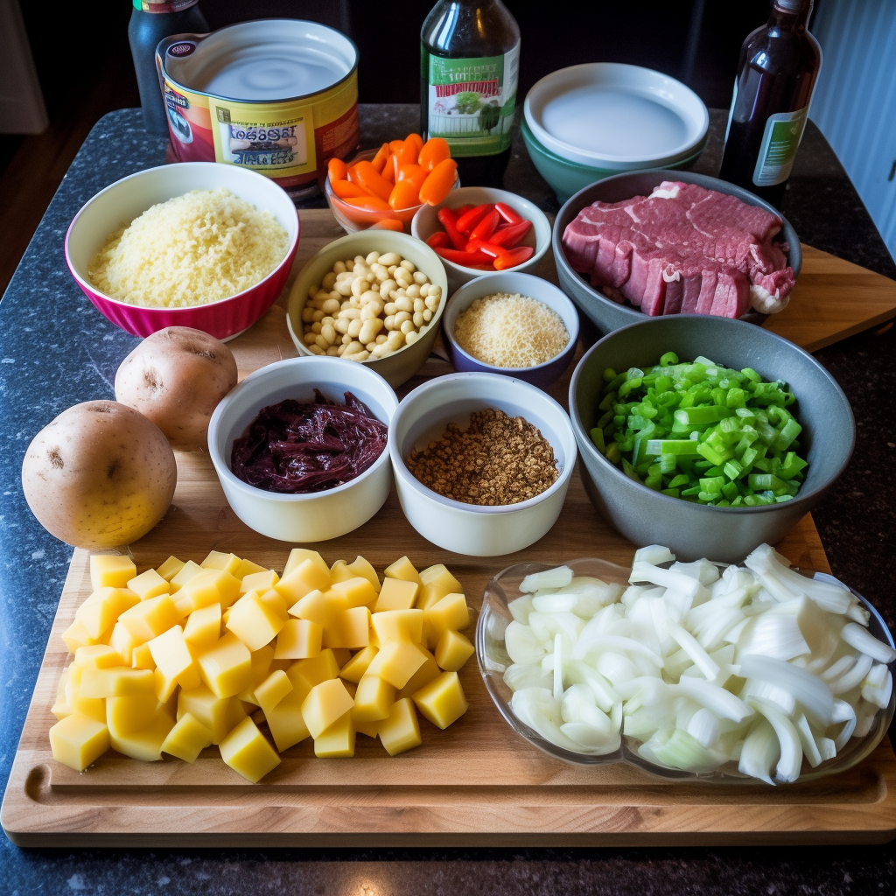
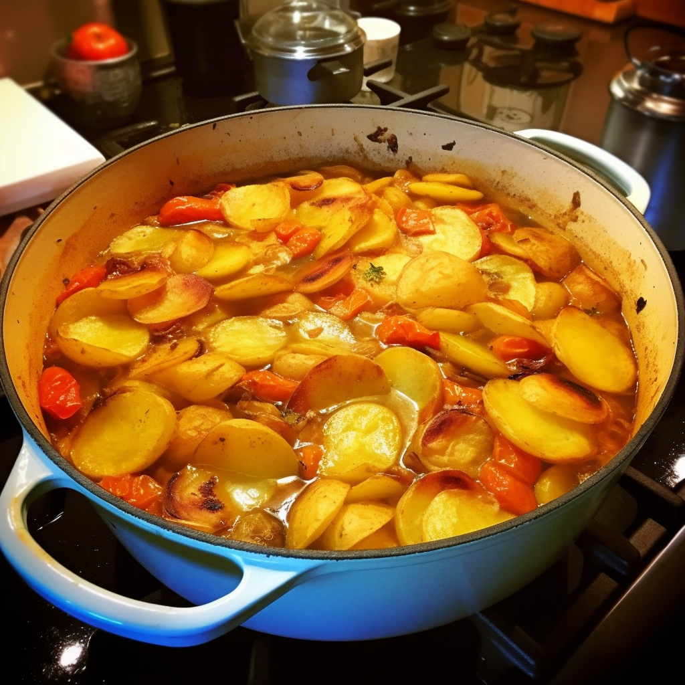
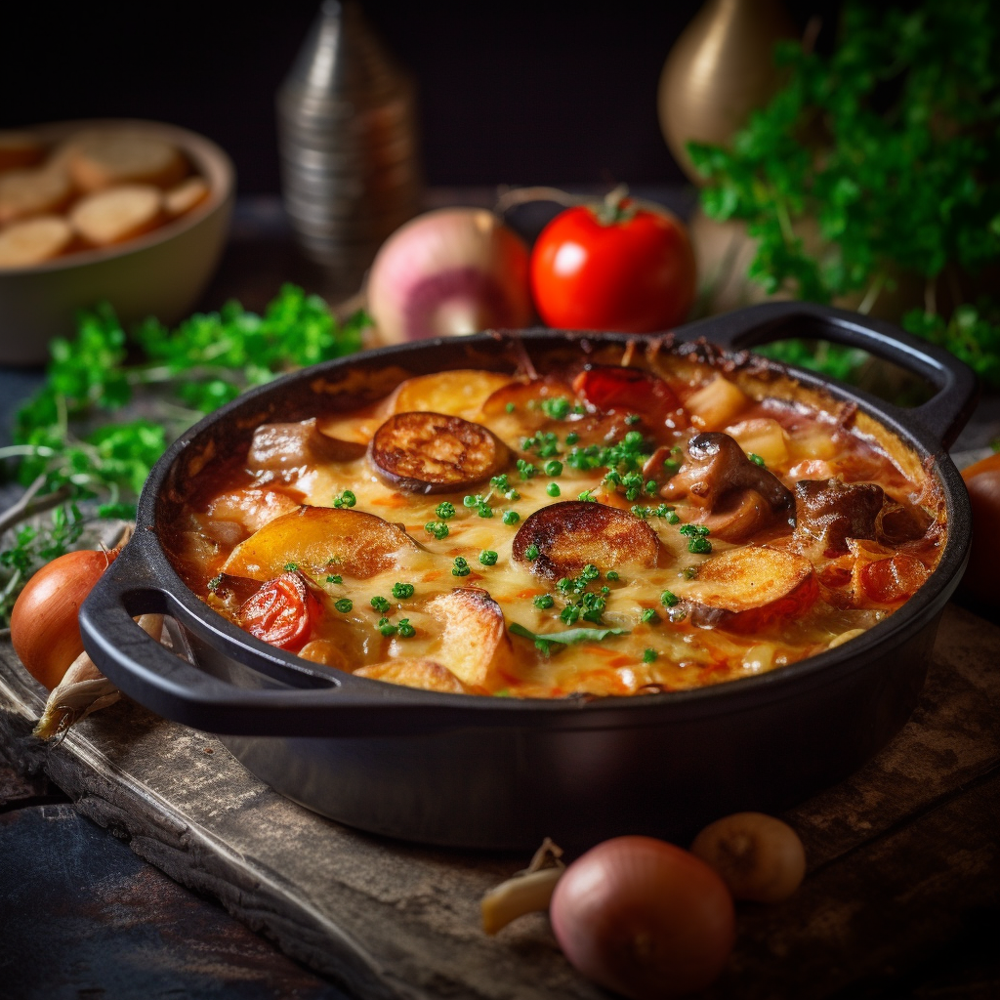

Lancashire HotPot



Description
Lancashire hotpot is a traditional dish that originates from the county of Lancashire in North West England. The dish consists of layers of meat, typically lamb, and thinly sliced potatoes, onions and carrots, which are topped with a pastry crust or more potatoes, and then baked slowly in the oven. The meat and vegetables are cooked in a rich broth made with beef or lamb stock, and flavored with thyme or rosemary. The resulting dish is hearty, warming and filling, making it a perfect meal for cold winter evenings. Lancashire hotpot is often served with pickled red cabbage or beetroot and a pint of ale or stout. Its simplicity and delicious taste have made it a beloved classic of British cuisine, and it continues to be enjoyed by families and communities across Lancashire and beyond.
Ingredients
- 100g dripping or butter
- 900g stewing lamb, cut into large chunks
- 3 lamb kidneys, sliced, fat removed
- 2 medium onions, chopped
- 4 carrots, peeled and sliced
- 25g plain flour
- 2 tsp Worcestershire sauce
- 500ml lamb or chicken stock
- 2 bay leaves
- 900g potato, peeled and sliced
Method
- Step 1
Heat oven to 160C/fan 140C/gas 3.
- Step 2
Heat a little of the 100g dripping or butter in a large shallow casserole dish and brown 900g stewing lamb chunks in batches,
lift to a plate, then repeat with 3 trimmed and sliced lamb kidneys.
-
Step 3
Fry 2 chopped onions and 4 peeled and sliced carrots in the pan with a little more dripping until golden.
- Step 4
Sprinkle over 25g plain flour, allow to cook for a couple of mins, shake over 2 tsp Worcestershire sauce,
pour in 500ml lamb or chicken stock, then bring to the boil.
-
Step 5
Stir in the stewing lamb and kidneys and 2 bay leaves, then turn off the heat.
-
Step 6
Arrange 900g peeled and sliced potatoes on top of the meat, then drizzle with a little more dripping.
-
Step 7
Cover, then place in the oven for about 1½ hrs until the potatoes are cooked.
-
Step 8
Remove the lid, brush the potatoes with a little more dripping, then turn the oven up to brown the potatoes,
or finish under the grill for 5-8 mins until brown.